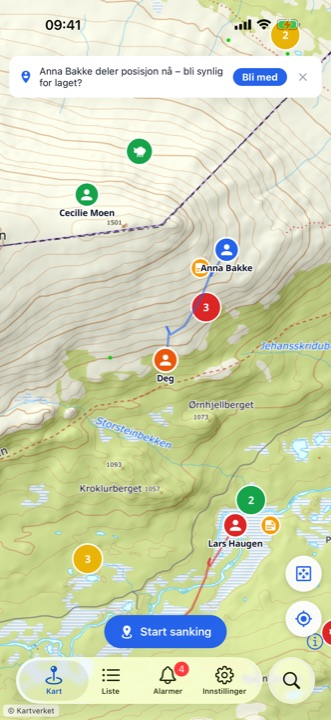
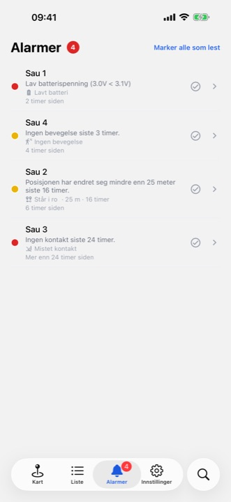

SauSank — for nettleser og iOS
SauSank
GPS-kart og posisjonsdeling for sauesanking, bygget for marka. Se sanntidsposisjoner fra Telespor GPS-bjeller rett på Kartverkets topografiske kart, del posisjon med hele letelaget — og finn sauen med peiling og offline kart, helt uten dekning.
Bygget for høstsankinga
iOS-appen — laget for fjellet, ikke for kontoret




Hva kan SauSank?
Full oversikt for deg og hele letelaget
Sauene live på kartet
Sanntidsposisjoner fra Telespor GPS-bjeller på Kartverkets topografiske kart. Fargekodede markører viser hvor ferske posisjonene er:
Hele letelaget i sanntid
Alle som logger inn med samme Telespor-bruker — familie, venner og sauletere — ser hverandre live på kartet, med spor som viser hvilke områder som er dekket.
Peiling uten dekning
Få retning og avstand til sauen fra der du står. Fungerer helt uten mobildekning — siste kjente posisjoner lagres på telefonen.
Offline kart
Last ned kartområder før du drar til fjells, og bruk appen som normalt der dekningen slutter.
Varsler
Få beskjed når en bjelle har lavt batteri, mister kontakt eller når en sau ikke har beveget seg på lenge.
7 dagers historikk
Interaktiv tidslinje viser hvordan sauene har beveget seg — nyttig for å forutse hvor de er på vei.
Kommentarer og kartnotater
Legg igjen kommentarer per sau og notater på kartet — synkronisert i sanntid med alle i laget.
Rovdyr på kartet
Observasjoner av jerv, gaupe, bjørn og ulv fra offentlige kilder, filtrert til området rundt besetningen din.
Posisjonsdeling i bakgrunnen
iOS-appen deler posisjonen din med letelaget selv om skjermen er låst — så laget alltid vet hvor det er lett.
Én pris — hele letelaget deler i sanntid
Nettappen på sausank.no er gratis. iOS-appen kan lastes ned gratis, og SauSank Pro er et årsabonnement der hele letelaget er inkludert i prisen — alle som logger inn med samme Telespor-bruker deler abonnementet uten ekstra kostnad.